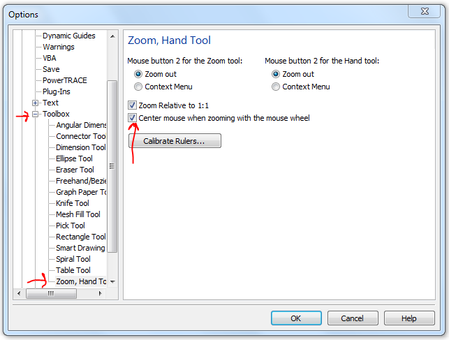

Как в x5 сделать зум через колесо мыши, как было в x4?
vertus / 03.04.2010, 17:22/00:41
Форум:
CorelDRAW x5 - всё хорошо, не считая некоторых багов, но, блин, как можно было так испортить зум???
Есть ли возможность вернуть алгоритм зума по скроллингу, как в x5?

Спасибо. За годы работы в одном пакете совсем забыл, как ковыряться в настройках (% .
Читать и ещё раз читать Обзор Х5
Тема закрыта.